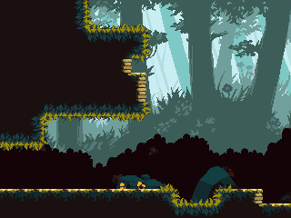
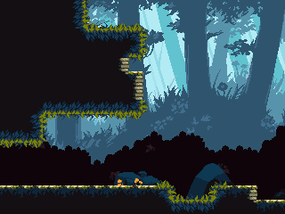
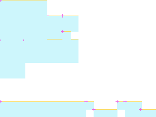
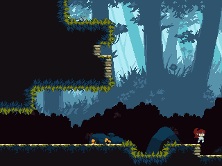

rmForest11
ROOM_040_S001 · ROOM 40 · rectangle [0, 0, 320, 240]
Исходный SHDR4, профиль global[76]=1; пульсация лучей ROOM21. Это выбранная допустимая фаза, а не native screenshot. Полная сцена остаётся заблокирована.

Классификатор и отрисованная native-галерея ↗ · Граф спавнов ↗


Статическая реконструкция v4; не native gameplay screenshot. Голубой: маски; жёлтый: опоры; розовый: pivot.
Исходный OBJT sprite_index, кадр 0 — исследовательский кандидат

Не исполнены native Create/Step/Draw, shaders, FSM и динамические spawn paths.
Готовность
Статическая основа: ready. Полная native-сцена: blocked_native_audit. Игровая сборка: не создана.
Переработать только подтверждённые статические визуальные слои под будущую авторскую игру. Сохранить сетку, границы, читаемость опор и места стыков. Новые сюжет, сцены и рисунки ещё не утверждены.
Зависимости
Future art direction and target asset classifier · Native actor/spawner/state/VFX audit before complete scene handoff
Рабочая очередность предложена по связности. Исполнитель: художница; личность, сроки и новые рисунки не назначены.
Depth слои: 2, 0. Опоры и ограничения: точные ROOM transforms и отдельные авторские маски; соседство не переосмыслять.
Входы, выходы и соседи
Входы: E036_02
Выходы: E040_00
{"section": "ROOM_040_S002", "kind": "shared_image_boundary", "direction": "right", "physical_passage": "unknown; drawing boundary is not a door"}
{"section": "ROOM_036_S002", "room": 36, "edge": "E040_00", "kind": "authored_transition", "direction": "left", "conditions": "room-level gate evidence; not evaluated", "source_anomaly": null}
Исходные условия и механизмы комнаты
[
{
"x": 512,
"y": 176,
"object": 349,
"instance_id": 100580,
"creation_code": -1,
"scale_x": 1.0,
"scale_y": 1.0,
"color": 4294967295,
"rotation": 0.0,
"source_room": 40,
"source_object": "ArabellaWall1",
"author_depth": 0,
"derived": false,
"flags": [
11
],
"kind": "gate",
"asset": "INTERACT_510",
"manual": false,
"interaction_radius": 28
},
{
"x": 560,
"y": 64,
"object": 376,
"instance_id": 100594,
"creation_code": -1,
"scale_x": 1.0,
"scale_y": 1.0,
"color": 4294967295,
"rotation": 0.0,
"source_room": 40,
"source_object": "Switch1",
"author_depth": 0,
"derived": false,
"flags": [
11
],
"kind": "orb",
"asset": "INTERACT_504",
"interaction_radius": 224
}
]Проверенные assetID
Кандидаты и блокеры
SPRT_264, SPRT_500
Полные авторские placements ↗ · Native-аудит ↗ · Очередь и возвраты ↗